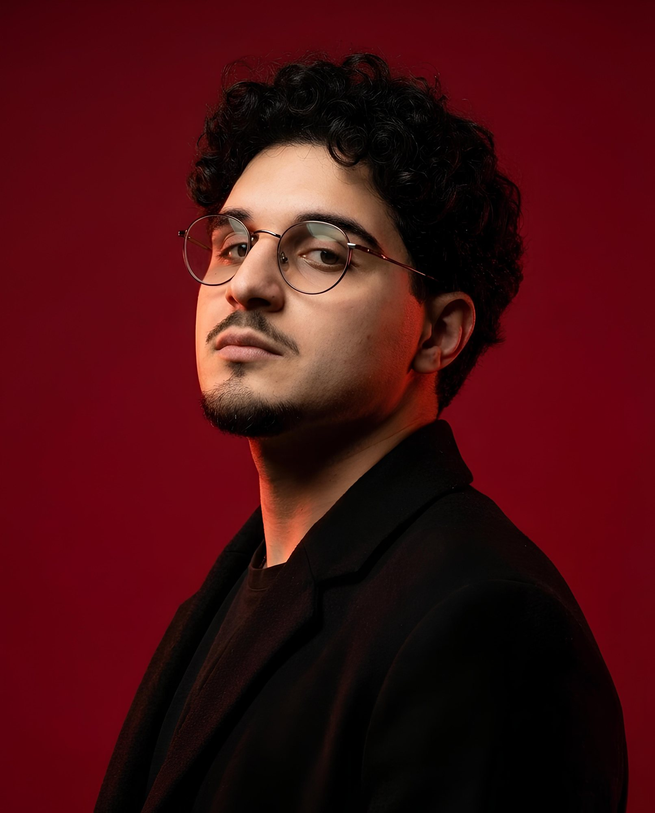
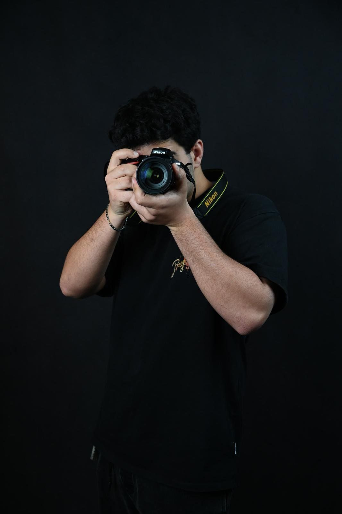
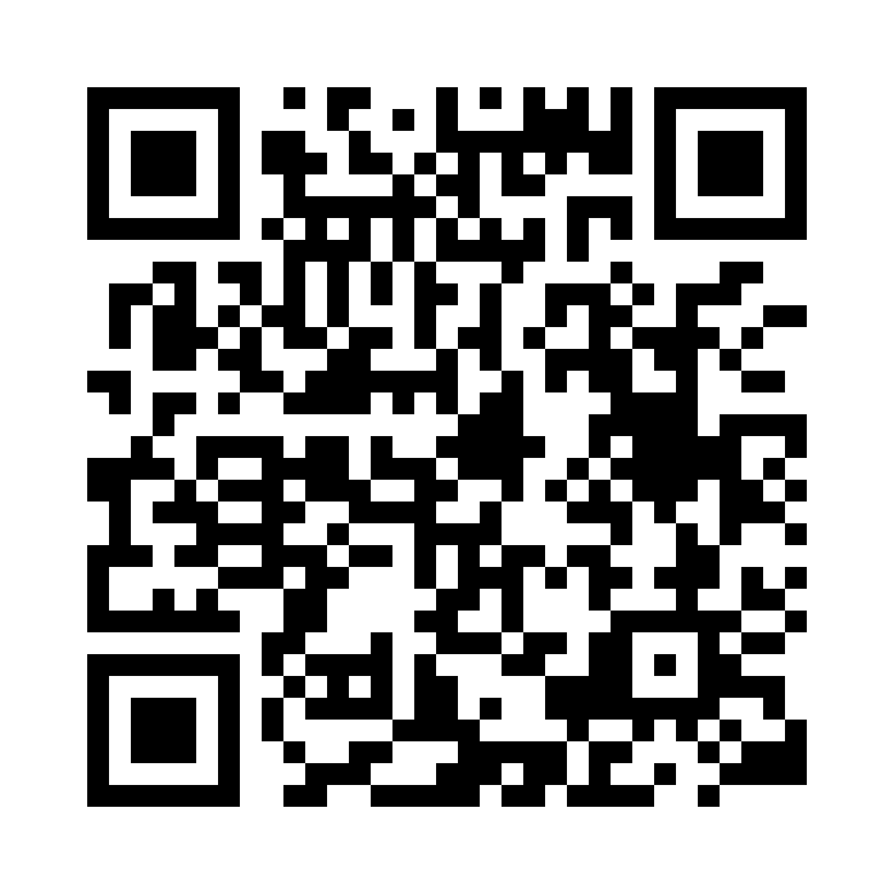

Graphic designer e visual director a Foggia
Rinaldi Visuals.
Costruisco identità visive che si capiscono in un secondo e si ricordano a lungo.
Lavori
selezionati.
Tre progetti raccontati per intero, poi una selezione di stampa ed editoria. Tocca un lavoro per aprirlo.
In
movimento.
Reel, animazioni e video per i brand che seguo. Taglio, ritmo e grafica in movimento pensati per fermare il pollice nei primi due secondi.
Attraverso
l'obiettivo.
Ritratti, eventi, luoghi. Trascina per scorrere, tocca una foto per ingrandirla.

Cristian
Rinaldi.
Sono un graphic designer e visual director di Foggia. Progetto identità visive, editoria, contenuti social e siti, e fotografo le persone e i luoghi che racconto.
Mi sono diplomato Tecnico Grafico all'I.I.S. Einaudi–Grieco e oggi studio Progettazione Artistica per l'Impresa, indirizzo Graphic Design, all'Accademia di Belle Arti di Foggia.
I miei lavori sono stati scelti per campagne ufficiali, eventi cittadini e una mostra collettiva. Oggi curo la comunicazione social di GAM Ristorazione e MyPetLab.
- Base
- Foggia, anche da remoto
- Strumenti
- Photoshop, Illustrator, InDesign, CapCut
- Lingue
- Italiano, inglese
Come
lavoro.
- 01
Ascolto
Capisco il tuo brand, gli obiettivi e chi deve guardarlo. Ogni progetto parte dalle domande giuste.
- 02
Direzione
Scelgo una strada visiva chiara e te la mostro prima di disegnare tutto: niente sorprese a metà lavoro.
- 03
Sviluppo
Costruisco il progetto e rifinisco ogni dettaglio finché non funziona davvero, su ogni formato.
- 04
Consegna
Ti consegno file pronti all'uso, per stampa e digitale, e resto disponibile anche dopo.
Esperienze
e formazione.
Iniziamo
un progetto.
Hai un'idea, un brand da costruire o un progetto da rendere più forte? Scrivimi, ti rispondo entro un giorno.
rinaldicristian92@gmail.com
Inquadra per tutti i miei linkFoggia, Italia. Disponibile anche da remoto.